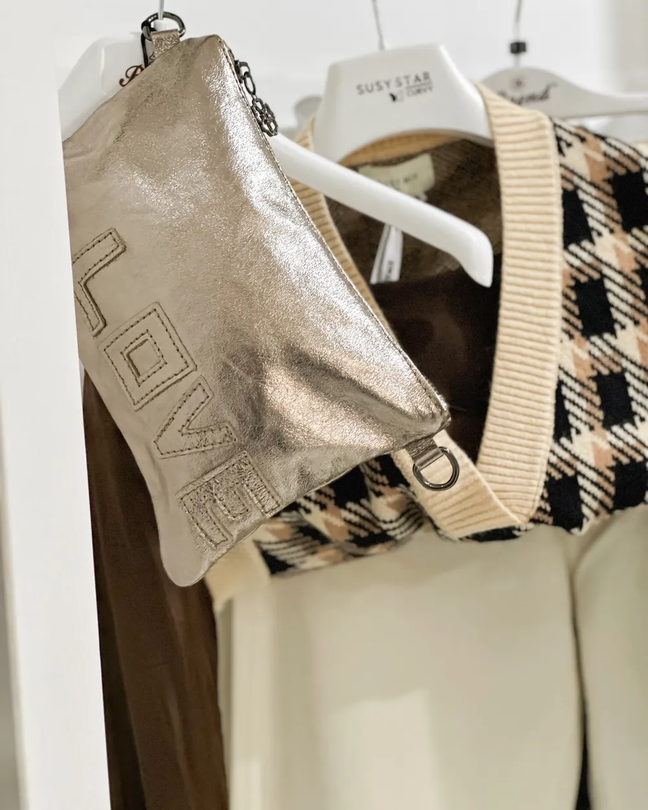
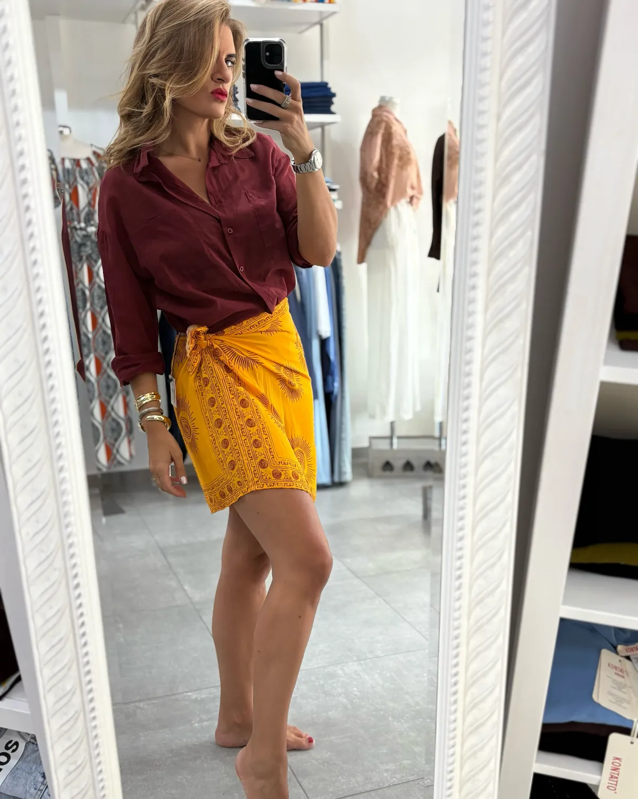

64
64KIOS
Abbigliamento e accessori donna, dalla 38 alla 52
Viale Guglielmo Marconi 64, Sutri (VT)
Qui ritiri gratis gli ordini online
Appena arrivati

Il look della settimana
L'abbiamo abbinato in negozio. Scegli le taglie e lo metti nel carrello tutto insieme.

Il consiglio del negozio, anche online
In negozio Eleonora ti consiglia la taglia e l'abbinamento. Sul sito trovi lo stesso consiglio su ogni capo: veste regolare, abbondante o aderente. Se hai un dubbio, ci scrivi su WhatsApp prima di ordinare.
«la proprietaria è stupenda, accogliente, sa consigliarmi»Emma D., recensione Google
KIOS Kids · Viale Marconi 62
Petit Bateau, Mayoral, Biocotton made in Italy e Bamboom in bambù organico. Per la nascita, per tutti i giorni e per le cerimonie.

Lista nascita online
La preparate con noi in negozio. Nonni e amici la aprono dal telefono, scelgono il regalo e pagano online.
Scopri la lista nascitaDicono di noi
Recensioni vere da Google e Facebook, riportate parola per parola.
Sutri · Viale Marconi
64Abbigliamento e accessori donna, dalla 38 alla 52
 62
62Abbigliamento da 0 a 14 anni e lista nascita
Novità nella tua taglia
Lasciaci l'email: ti scriviamo quando arriva qualcosa di nuovo nella tua taglia.
oppure
Entra nel gruppo WhatsApp